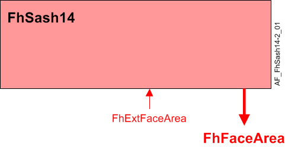

Fume hood sash, external only (FhSash14)
Note to reader
Optional.
Overview
The application function "Fume hood sash 14, external only" (FhSash14) is used to assign the face area from a Sash Open Area Module (SOAM) to a BACnet object and report the status of the sash sensors connected to the SOAM to other AFs.
The binary output represents the valid state of FhFaceArea. The output is monitored by other modules to indicate a failure on the Operator Display Panel, activate alarms, and to set the valid state of other objects.
Main features:
- Face area calculation
- Face area valid signal
Function

| Command or request (or related) |
| Notification of condition or status, or availability |
| Device mode |
| Interlock (internal signal, not a BACnet object; see Interlocks section for additional information) |


Face area calculation
The Sash Open Area Module (SOAM) is an external device that has additional sash inputs and calculates an open area based on a separate configuration. The SOAM is connected to the fume hood controller via the sensor bus (SCOM).
Face area is determined by the following:
- FhExtFaceArea – External face area, analog input value.
- ExtFaceArea – External face area is used, binary configuration extension item.
- AreaSenFail – Area on sensor failure, analog configuration extension item.
- FhFaceArea – Fume hood face area, analog calculated value, for monitoring only.
Face area valid signal
The FaceAreaVld output is used by other modules to determine if the general fume hood failure alarm should be active and to set other objects to valid.
The FaceAreaVld signal is a combination of valid signals from the sash 1 position sensor and external face area. ExtFaceArea is used to determine if there is an active external face area device.
The output will only be ON and FhFaceArea will only be set valid when the external face area is valid
Feature configuration
Feature selections for "Room HVAC coordination" are accessed via the Application configuration task in the Configuration component.
Feature (AF) | Feature description | Ref. |
|---|---|---|
Trend for fume hood face area | None/Active | ☑ |
Configuration
 Parameters
Parameters
Description | Parameter | Default value |
|---|---|---|
Area on sensor failure | AreaSenFail | 0.5 [m2] |
Area unit | AreaUnit | [m2] |
Interface
Interface | Description | Type | Ref. | Owned by | |
|---|---|---|---|---|---|
FhExtFaceArea | Fume hood external face area | AI | ◉ | Room segment / Field device | |
FhFaceArea | Fume hood face area | ACalcVal | ● | - | |
TrndFhFaceArea | Trend for fume hood face area | FtrSel | ● | - | |
| TrndFhFaceArea | Trend for fume hood face area | TrndLogS | ● | - |
Engineering and commissioning
Optional.